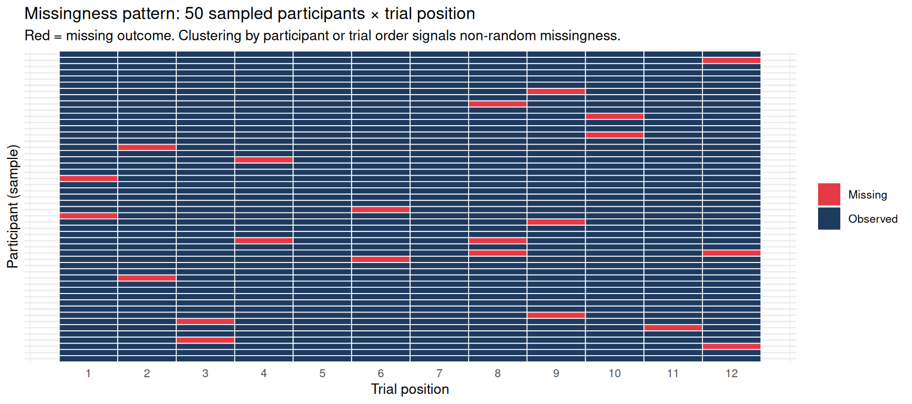
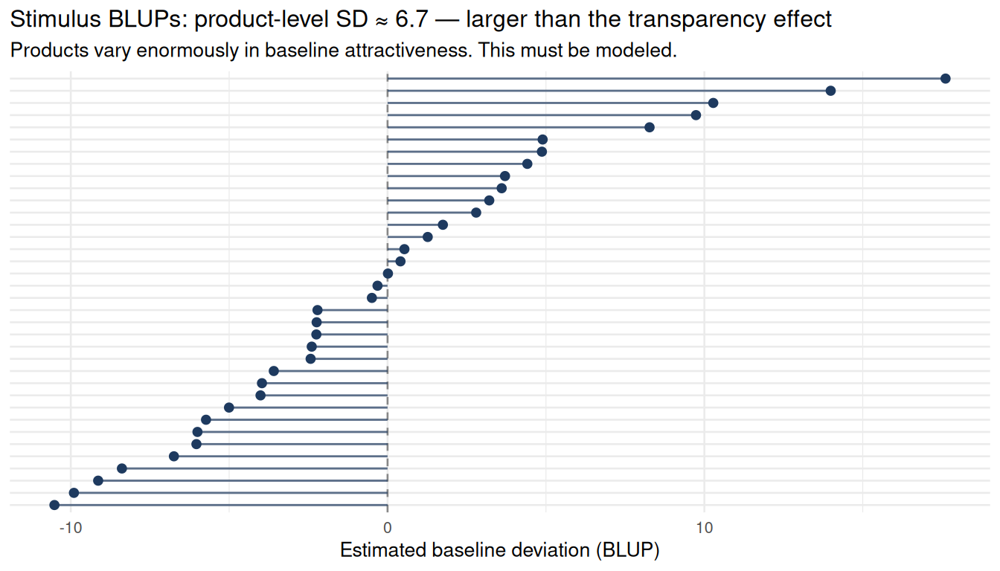

This chapter does not introduce a new method. It shows what it looks like to use the methods from Parts 1–7 on a single realistic dataset, from first principles.
The voice is intentionally that of a supervision meeting. Every major decision arrives as a question, gets answered, and then gets tested. But this is not a clean textbook example — the data are simulated to include the kinds of problems a real JDM dataset actually has: nonlinear covariate effects, trial-order fatigue, missing outcomes, and an observation process that is not independent of the treatment or outcome.
We simulate the kind of dataset a JDM researcher might actually receive: an intended clean experiment filtered through participant fatigue, missing responses, platform differences, bounded ratings, and mild implementation imbalance. Because this is a simulation, we know the latent truth. Because the observed data are messy, we still have to behave like real analysts.
The key teaching distinction running through this chapter:
Modeling choices minimize concerns; they rarely erase them. Adding covariates reduces imbalance bias; it does not prove there is no unmeasured confound. Adjusting for missingness predictors reduces selection bias; it does not solve missing-not-at-random. The goal is to document what was done, what it addressed, and what remains.
1. The Research Question and Estimand
Does transparent fee disclosure increase willingness to adopt a financial product, and does that effect generalize across participants, product offers, and research sites?
The target estimand is the average total effect of assigned fee transparency on willingness to adopt, averaged across the population of participants, product offers, and contexts similar to those sampled. This is an intention-to-treat style estimand — we want the effect of the transparency display, not the effect of comprehension or perceived clarity, which may be mechanisms. Controlling for comprehension or perceived transparency would change the estimand and should not be done in the main model.
This question contains several distinct sub-questions a pooled regression cannot answer:
Effect for these participants (descriptive)
Effect across the population of participants (requires participant random effects)
Effect across the population of product offers (requires stimulus random effects)
Effect across different research sites (requires site random effects)
Effect conditional on financial literacy (requires the interaction)
2. Design Audit Before Modeling
Design audit: these answers determine every subsequent modeling decision.
Design question
Answer in this study
Modeling implication
What is one row?
One participant’s rating of one product offer
Trial-level response; multiple rows per participant
What is randomized?
Fee transparency display (within-participant)
Fixed effect for transparency
Does treatment vary within participant?
Yes — each sees both conditions
Candidate by-participant random slope
Are stimuli sampled?
Yes — 36 product offers from a broader set
Stimulus random intercept
Are participants crossed with stimuli?
Partially — each rates 12 of 36
Crossed (partial) random effects
Are participants nested in sites?
Yes — 240 participants across 4 sites
Site random intercept
Are there stimulus covariates?
Risk level, expected value
Check functional form; control for balance
Is there a participant-level moderator?
Financial literacy (pre-treatment)
Fixed effect; interaction candidate
Is the outcome continuous?
0–100 rating
Linear mixed model; check residuals and bounds
What missingness is plausible?
Higher risk → more non-response; late trials → fatigue
Missingness audit before modeling
Which variables are post-treatment?
Comprehension, perceived transparency
Exclude from main effect model
3. Simulate the Latent DGP
The true data-generating process is clean and known — but the observed dataset will not be.
DGP features: nonlinear expected-value effect (diminishing returns), risk threshold effect, trial-order fatigue, participant random intercepts and slopes, stimulus and site random intercepts, heteroskedastic residuals (more variance for high-risk products).
Code
dgp <-list(intercept =50,effect_transparency =4, # +4 points for transparent-fee displayeffect_risk =-2.5, # linear risk penaltyeffect_risk_high =-2.0, # extra penalty for very high risk (threshold)effect_ev_linear =2.0, # standardised EV (expected_value_z), lineareffect_ev_quad =-0.8, # diminishing returns on EVeffect_literacy =2,interaction_tx_lit =-1.5, # transparency helps low-literacy moreeffect_fatigue =-0.20, # per trial: late trials get lower ratingssd_participant =8,sd_stimulus =5,sd_site =4,sd_slope_part =2,sd_residual =7)
4. The Observation Process: How Real Data Get Messy
A real experiment does not hand you adoption_intent for every intended trial. Between the latent DGP and the analyst’s dataset, several things happen:
Some participants are on mobile devices, producing noisier or faster responses.
Some trials are skipped because participants are fatigued or confused.
Missingness is not random: it is higher for high-risk products, later trials, low-literacy participants, and mobile users.
Some trials have failed attention checks — and those failures are partly caused by the treatment (transparent-fee displays are more complex to process).
Code
set.seed(20240611) # separate seed for observation processtrials <- trials |>mutate(# Platform/device: more common at sites 2–3 (online platforms)device_mobile =rbinom(n(), 1, plogis(-0.3+0.6*as.integer(site_id %in%c(2, 3)))),# Missingness: higher for risky products, transparent condition, late trials,# low-literacy participants, and mobile usersp_missing =plogis(-3.5+0.40* risk_level +0.30* transparency +0.25*as.integer(trial_order >9) -0.35* financial_literacy +0.20* device_mobile),missing_y =rbinom(n(), 1, p_missing),adoption_intent_obs =if_else(missing_y ==1, NA_real_, adoption_intent),# Attention failures: related to late trials, low literacy, and — importantly —# transparency (more complex displays cause more failures)attention_fail =rbinom(n(), 1,plogis(-3.8+0.40*as.integer(trial_order >9) -0.45* financial_literacy +0.18* transparency +0.15* risk_level)) ) |>select(-p_missing)
NoteThe Data Flow
flowchart LR
D["Intended design<br/>240 × 12 = 2,880 trials"] --> A["Assignment<br/>transparency randomized"]
A --> R["Response process<br/>fatigue, attention, device"]
R --> M["Observed data<br/>missing outcomes, attention flags"]
M --> Mod["Analysis<br/>mixed-effects + diagnostics"]
The analysis model sees only adoption_intent_obs. The latent adoption_intent is never observed. Diagnostics tell us whether the gap between intended and observed data threatens the estimand.
5. Data Intake Audit
Before fitting any model, build a picture of what data you actually have.
5.1 Data retention table
Code
n_intended <-nrow(trials)n_observed <-sum(!is.na(trials$adoption_intent_obs))n_attfail <-sum(trials$attention_fail ==1, na.rm =TRUE)n_analytic <-sum(!is.na(trials$adoption_intent_obs) & trials$attention_fail ==0)tibble(Stage =c("Intended (all planned trials)","Non-missing outcome","Attention failures (in observed rows)","Clean analytic sample"),n =c(n_intended, n_observed, n_attfail, n_analytic),pct_of_intended =round(100*c(n_intended, n_observed,sum(trials$attention_fail), n_analytic) / n_intended, 1)) |> knitr::kable(caption ="Data flow: how many rows are available at each stage?")
Data flow: how many rows are available at each stage?
Stage
n
pct_of_intended
Intended (all planned trials)
2880
100.0
Non-missing outcome
2735
95.0
Attention failures (in observed rows)
95
3.3
Clean analytic sample
2646
91.9
5.2 Missingness by design variables
Student question: The mixed model handles unequal observations per participant automatically. So why does missingness matter?
Advisor response: Mixed models handle unequal observations correctly — they do not require balanced data. What they do not handle is informative missingness: when the probability of observing a trial is related to what the outcome would have been, complete-case analysis produces biased estimates. That is different from just having different numbers of rows per person.
# Missingness by sitemiss_by_site <- trials |>group_by(site_id) |>summarise(miss_rate =round(100*mean(missing_y), 1), n =n())knitr::kable(miss_by_site, caption ="Missingness rate by site")
Missingness rate by site
site_id
miss_rate
n
1
4.4
720
2
5.8
720
3
5.4
720
4
4.4
720
Code
# Missingness by trial ordermiss_by_order <- trials |>group_by(trial_order) |>summarise(miss_rate =round(100*mean(missing_y), 1))knitr::kable(miss_by_order, caption ="Missingness rate by trial order — late-trial fatigue?")
Missingness rate by trial order — late-trial fatigue?
trial_order
miss_rate
1
5.4
2
4.6
3
3.3
4
4.2
5
1.2
6
5.4
7
4.2
8
5.0
9
8.8
10
7.9
11
4.2
12
6.2
Code
heatmap_ids <-sort(sample(unique(trials$participant_id), 50))trials |>filter(participant_id %in% heatmap_ids) |>mutate(status =ifelse(is.na(adoption_intent_obs), "Missing", "Observed")) |>ggplot(aes(x = trial_order, y =factor(participant_id), fill = status)) +geom_tile(color ="white", linewidth =0.3) +scale_fill_manual(values =c("Observed"="#1e3a5f", "Missing"="#e63946")) +scale_x_continuous(breaks =1:trials_per_part) +labs(title ="Missingness pattern: 50 sampled participants × trial position",subtitle ="Red = missing outcome. Clustering by participant or trial order signals non-random missingness.",x ="Trial position", y ="Participant (sample)", fill =NULL ) +theme_minimal(base_size =10) +theme(axis.text.y =element_blank(), axis.ticks.y =element_blank())

Code
trials |>mutate(literacy_tertile =ntile(financial_literacy, 3)) |>group_by(literacy_tertile) |>summarise(miss_rate =round(100*mean(missing_y), 1), n =n()) |> knitr::kable(caption ="Missingness by financial literacy tertile — low-literacy participants more likely to drop out")
Missingness by financial literacy tertile — low-literacy participants more likely to drop out
literacy_tertile
miss_rate
n
1
6.7
960
2
5.5
960
3
2.9
960
What we learned: Missingness is higher in the transparent condition, in later trials, and for low-literacy participants. This is not random. A complete-case analysis will systematically underrepresent high-risk/late-trial/low-literacy observations. We will return to this when checking robustness (Section 15).
5.3 Outcome checks
Code
p1 <-ggplot(trials, aes(x = adoption_intent_obs)) +geom_histogram(bins =30, fill ="#1e3a5f", color ="white", na.rm =TRUE) +labs(title ="Distribution of adoption_intent_obs", x ="Adoption intent (0–100)") +theme_minimal(base_size =10)p2 <- trials |>filter(!is.na(adoption_intent_obs)) |>mutate(Condition =ifelse(transparency ==1, "Transparent", "Non-transparent")) |>ggplot(aes(x = Condition, y = adoption_intent_obs, fill = Condition)) +geom_boxplot(show.legend =FALSE, width =0.5) +scale_fill_manual(values =c("#cccccc", "#1e3a5f")) +labs(title ="By condition", y ="Adoption intent", x =NULL) +theme_minimal(base_size =10)p3 <- trials |>filter(!is.na(adoption_intent_obs)) |>ggplot(aes(x = trial_order, y = adoption_intent_obs, group = trial_order)) +geom_boxplot(fill ="#2d6a4f", alpha =0.6, outlier.size =0.5) +labs(title ="By trial order — fatigue?", y =NULL, x ="Trial") +theme_minimal(base_size =10)gridExtra::grid.arrange(p1, p2, p3, ncol =3)
cat("Proportion at ceiling (≥98):", round(mean(trials$adoption_intent_obs >=98, na.rm=TRUE), 3), "\n")
Proportion at ceiling (≥98): 0
6. Assignment and Post-Treatment Audit
6.1 Was assignment actually balanced?
Even with randomization, the realized assignment can be unbalanced. An assignment audit fits a logistic model predicting the treatment indicator from pre-treatment variables. A well-randomized assignment should produce no predictors with large, systematic coefficients.
Assignment audit: does any pre-treatment variable predict transparency assignment? Large coefficients (|b| > 0.2) or small p-values suggest implementation imbalance.
term
estimate
std.error
statistic
p.value
risk_level
-0.040
0.037
-1.0756909
0.282
expected_value_z
0.008
0.038
0.2017446
0.840
financial_literacy
-0.004
0.036
-0.1002778
0.920
factor(site_id)2
0.061
0.106
0.5787045
0.563
factor(site_id)3
0.000
0.106
0.0026603
0.998
factor(site_id)4
-0.065
0.106
-0.6134279
0.540
trial_order
0.018
0.011
1.6556615
0.098
device_mobile
0.054
0.076
0.7190118
0.472
What we learned: The assignment audit tells us which variables, if any, are unbalanced and need to be controlled in the model. If the intercept-only model fits as well as the full model, randomization worked in the realized sample.
6.2 Which variables belong in the main model?
Not every variable should enter the main model. Some are pre-treatment design features (safe to include). Some are post-treatment measurements or mechanisms (including them changes the estimand).
Code
tibble(Variable =c("Risk level", "Expected value", "Financial literacy","Trial order", "Device type","Attention check score", "Perceived transparency","Comprehension score"),Timing =c("Pre-treatment stimulus attribute", "Pre-treatment stimulus attribute","Pre-treatment participant trait","Design/process variable", "Pre-treatment contextual","Post-trial, ambiguous", "Post-treatment mediator","Post-treatment mediator"),`Safe in main model?`=c("Yes", "Yes", "Yes","Yes if imbalance detected","Yes as robustness covariate","Caution","No — changes estimand","No — changes estimand"),Why =c("Stimulus feature not caused by transparency display","Stimulus feature not caused by transparency display","Measured before any trial","Could confound if transparency correlates with position","Affects response quality and missingness; not caused by transparency","May reflect difficulty of processing the transparency display","Blocking a mechanism changes total-effect estimand","Blocking a mechanism changes total-effect estimand" )) |> knitr::kable(caption ="Variable timing audit: what should enter the main model?")
Variable timing audit: what should enter the main model?
Variable
Timing
Safe in main model?
Why
Risk level
Pre-treatment stimulus attribute
Yes
Stimulus feature not caused by transparency display
Expected value
Pre-treatment stimulus attribute
Yes
Stimulus feature not caused by transparency display
Financial literacy
Pre-treatment participant trait
Yes
Measured before any trial
Trial order
Design/process variable
Yes if imbalance detected
Could confound if transparency correlates with position
Device type
Pre-treatment contextual
Yes as robustness covariate
Affects response quality and missingness; not caused by transparency
Attention check score
Post-trial, ambiguous
Caution
May reflect difficulty of processing the transparency display
Perceived transparency
Post-treatment mediator
No — changes estimand
Blocking a mechanism changes total-effect estimand
Comprehension score
Post-treatment mediator
No — changes estimand
Blocking a mechanism changes total-effect estimand
WarningPost-Treatment Controls Change the Estimand
flowchart LR
T["Fee transparency\n(assigned)"] --> C["Comprehension /\nperceived clarity"]
C --> Y["Adoption intent"]
T --> Y
L["Financial literacy"] --> C
L --> Y
Transparency may work by increasing comprehension of fees. If we control for comprehension, we estimate only the part of the transparency effect that does not flow through comprehension — a different and narrower claim than “does the display change adoption intent?” The main model should not include comprehension or perceived transparency.
7. Start With the Wrong Model
Code
m0 <-lm(adoption_intent_obs ~ transparency, data = trials)cat("Rows in dataset:", nrow(trials), "\n")
Student question: The model ran, it gave a significant result, and I can see the estimate. What’s wrong with it?
Advisor response: Several things. First — did you notice it silently dropped rows? Every model using adoption_intent_obs drops missing rows without telling you. You need to check that explicitly. Second, the model treats all 2,500-odd remaining rows as independent. They are not: the same participants appear repeatedly, the same stimuli appear repeatedly, and participants are nested in sites. In this within-person design, ignoring participant baselines actually hurts precision — participant-level variance stays in the residual and dilutes the within-person signal. Third, the model assumes risk and expected value have linear effects — we know from the DGP that they do not. Fourth, it ignores trial-order fatigue. And fifth, it assumes missingness is irrelevant.
Code
tibble(Problem =c("Silent row dropping", "Independence assumption", "Participant baselines in residual","Stimulus variance ignored", "Nonlinear covariate effects", "Trial-order fatigue","Informative missingness"),`What m0 does`=c("Drops missing rows without warning","Treats ~2,500 rows as independent","Person-to-person differences inflate residual SD","Product-level attractiveness absorbed into residual","Risk and EV treated as linear","No adjustment for late-trial fatigue","Complete cases treated as a random subsample" ),`What could go wrong`=c("If dropped rows are not random, estimate may be biased","SE is wrong for clustered data","Less efficient estimation of within-person effect","Cannot generalize to new product offers","Covariate misspecification may bias transparency estimate","If transparency is unbalanced across trial order, confound exists","If missingness depends on treatment or outcome, bias follows" )) |> knitr::kable(caption ="Why m0 misrepresents the design — a checklist of problems")
Why m0 misrepresents the design — a checklist of problems
Problem
What m0 does
What could go wrong
Silent row dropping
Drops missing rows without warning
If dropped rows are not random, estimate may be biased
Independence assumption
Treats ~2,500 rows as independent
SE is wrong for clustered data
Participant baselines in residual
Person-to-person differences inflate residual SD
Less efficient estimation of within-person effect
Stimulus variance ignored
Product-level attractiveness absorbed into residual
Cannot generalize to new product offers
Nonlinear covariate effects
Risk and EV treated as linear
Covariate misspecification may bias transparency estimate
Trial-order fatigue
No adjustment for late-trial fatigue
If transparency is unbalanced across trial order, confound exists
Informative missingness
Complete cases treated as a random subsample
If missingness depends on treatment or outcome, bias follows
8. Add Participant Random Intercepts
Code
m1 <-lmer(adoption_intent_obs ~ transparency + (1| participant_id), data = trials)
Student question: The SE went down when I added random intercepts. I expected it to go up.
Advisor response: This is the within-person design working correctly. In a between-subjects design, clustering means the effective N is smaller than the raw N, and random intercepts inflate the SE. Here, transparency is randomized within participants — each person sees both conditions. The participant random intercept removes their stable adoption tendency from the residual. With less residual noise, the within-person comparison is estimated more precisely. The SE shrinks not because we got conservative, but because the model separated signal from noise correctly.
What is still wrong: Stimuli are still treated as fixed. Product attractiveness differences are sitting in the residual. We cannot generalize beyond these 36 offers.
# Caterpillar plotranef(m2)$stimulus_id |>as.data.frame() |>rownames_to_column("id") |>rename(blup =`(Intercept)`) |>arrange(blup) |>ggplot(aes(x =reorder(id, blup), y = blup)) +geom_hline(yintercept =0, linetype ="dashed", color ="#888888") +geom_segment(aes(xend = id, y =0, yend = blup), color ="#1e3a5f", linewidth =0.5, alpha =0.7) +geom_point(color ="#1e3a5f", size =1.8) +coord_flip() +labs(title ="Stimulus random intercepts: some products are inherently more attractive",subtitle =paste0("SD ≈ ", round(sqrt(var_stim2), 1)," points — larger than the transparency effect itself."),x =NULL, y ="Estimated baseline deviation (BLUP)") +theme_minimal(base_size =10) +theme(axis.text.y =element_blank(), axis.ticks.y =element_blank())

Notem2 Is the Aha Moment
The stimulus SD is larger than the transparency effect. This means that if we had used a different set of 36 product offers, we could have seen a meaningfully different average transparency effect — not because the psychology changed, but because our particular sample happened to skew toward naturally attractive or unattractive products.
The crossed model says: given this kind of between-product variance, the transparency effect is estimated as 3.55 on average across the population of such products. That is a different and more honest claim than “the effect is X for these 36 products.”
Student question: Adding site barely changed the estimate or the SE. Did it do anything?
Advisor response: Yes — but not by changing the estimate. It did two things: (1) it correctly partitioned between-site baseline differences out of the participant random intercept, which was absorbing site-level noise before; and (2) it shifted the estimand. Before, the claim was “effect across these participants in these four sites.” After, the claim is “average effect across a population of sites similar to these four.” Site differences here are baseline differences, not transparency confounds — that is why the estimate did not change. If the transparency effect itself varied across sites, we would need a random slope for transparency by site. With only four sites, that slope would be unreliably estimated.
11. Add Design Covariates
Risk level, expected value, and financial literacy are pre-treatment variables. Including them adjusts for any realized imbalance in the randomization, even when that imbalance is small.
The transparency estimate has barely moved from m0 through m4. That is not a failure — it is evidence that the design was clean: transparency was not confounded with participant characteristics, product features, or site. The modeling sequence still matters because it answers different questions about precision, generalization, and estimand.
If the estimate had changed when covariates were added, it would tell us there was realized imbalance and the covariate model is correcting for it.
12. Functional-Form Check
Student question: We added risk level and expected value as linear terms. But the DGP has a threshold risk effect and diminishing EV returns. Does getting the functional form wrong matter?
Advisor response: It can. If the linear covariate model misspecifies the risk or EV relationship, it may absorb some of that misspecification into the transparency estimate. The diagnostic is to plot residuals against the covariates and compare a flexible model to the linear one.
Code
resid_m4 <-tibble(residual =residuals(m4),risk_level =model.frame(m4)$risk_level,ev_z =model.frame(m4)$expected_value_z,trial_ord = trials$trial_order[!is.na(trials$adoption_intent_obs)])p_r <-ggplot(resid_m4, aes(x = risk_level, y = residual)) +geom_point(alpha =0.1, color ="#1e3a5f") +geom_smooth(method ="loess", se =FALSE, color ="#e63946", linewidth =1) +geom_hline(yintercept =0, linetype ="dashed") +labs(title ="Residuals vs risk level", subtitle ="Curve = loess smoother",x ="Risk level", y ="Residual") +theme_minimal(base_size =10)p_e <-ggplot(resid_m4, aes(x = ev_z, y = residual)) +geom_point(alpha =0.1, color ="#1e3a5f") +geom_smooth(method ="loess", se =FALSE, color ="#e63946", linewidth =1) +geom_hline(yintercept =0, linetype ="dashed") +labs(title ="Residuals vs expected value (std.)", x ="Expected value (z)", y ="Residual") +theme_minimal(base_size =10)p_t <-ggplot(resid_m4, aes(x = trial_ord, y = residual, group = trial_ord)) +geom_boxplot(fill ="#1e3a5f", alpha =0.5, outlier.size =0.5) +geom_hline(yintercept =0, linetype ="dashed") +labs(title ="Residuals vs trial order", x ="Trial", y ="Residual") +theme_minimal(base_size =10)gridExtra::grid.arrange(p_r, p_e, p_t, ncol =3)
Does nonlinear functional form + trial order change the transparency estimate? True effect = 4
model
estimate
std.error
p.value
m4: linear risk/EV, no trial order
3.549
0.309
0
m4b: nonlinear risk/EV + trial order
3.603
0.307
0
What we learned: If the transparency estimate shifts between m4 and m4b, the linear covariate model was absorbing covariate misspecification into the treatment estimate. The nonlinear model is more honest about the product-valuation process.
A substantive note on functional form: A linear expected-value term says each additional dollar of EV matters equally. In most JDM settings, that is implausible — people have diminishing sensitivity to expected value, especially at higher magnitudes. The quadratic term captures this psychologically motivated nonlinearity. Choosing a functional form is not only a statistical decision; it is a claim about the decision process.
13. Add the Theoretically Motivated Interaction
The hypothesis: fee transparency helps low-literacy participants more because they struggle to infer fees from product descriptions without explicit disclosure.
Notem5 Is the First Model That Changes the Substantive Claim
Models m0 through m4b answered: “Is there a transparency effect, and is the estimate credible?”
m5 answers: “For whom does the effect hold?” After m5, the transparency “main effect” is the effect at average financial literacy, not a universal constant. This changes what researchers should say in their discussion — and which populations policy-makers should target.
Remove the correlation parameter first (||). This is less demanding and often resolves boundary issues.
If still singular, the slope variance may be genuinely negligible — report it and retain m5.
Never silently drop the random slope. Report the simplification path.
Decision rule: Keep the slope if (a) non-singular, (b) slope SD is substantively non-trivial, and (c) it does not destabilize fixed-effect inference. Use isTRUE() guards in code to avoid if(NA) errors.
Does the random slope change fixed-effect inference?
model
term
estimate
std.error
m5: no slope
transparency
3.612
0.306
m5: no slope
transparency:financial_literacy
-1.222
0.295
m6b: uncorrelated slope
transparency
3.610
0.322
m6b: uncorrelated slope
transparency:financial_literacy
-1.232
0.310
15. Missingness Sensitivity
Student question: We’ve been running complete-case models throughout. Is that OK?
Advisor response: It depends on why data are missing. The intake audit showed that missingness is higher in the transparent condition and for low-literacy participants. If the transparency effect is smaller for the kinds of trials that tend to go missing — and those trials are more likely to be transparent — the complete-case estimate could be biased upward.
Diagnostic move: Compare the complete-case model to a model that includes the missingness-related predictors (trial order, device, risk). If including them changes the transparency estimate, the complete-case analysis was affected by differential missingness.
What we learned: If the estimate changed when missingness predictors were added, differential dropout was biasing the complete-case estimate. If it is stable, complete-case analysis is more defensible — though not proven ignorable. We report both estimates and the direction of any change.
WarningWhat This Sensitivity Analysis Can and Cannot Do
Adjusting for observed missingness predictors reduces bias if missingness is explainable by those variables (missing at random conditional on covariates). It does not solve missing-not-at-random: if participants with low latent adoption intent are especially likely to skip high-risk transparent trials — and that tendency is unobservable — no covariate adjustment reaches it.
The honest statement: “We tested whether missingness-related variables changed our estimate. [Result]. The remaining concern is that missingness may depend on latent adoption intent, which we cannot fully rule out.”
16. Estimator and Inference Decisions
NoteKey Estimator Choices
Decision
Default
When to change
REML vs ML
REML for final model
Use ML (REML=FALSE) to compare fixed-effect structures
Transparency effect at average literacy: Fee transparency increased willingness to adopt by approximately 3.6 points (true DGP: 4). The model recovered the effect accurately despite the nonlinear covariates and missing data.
Literacy moderation: The interaction confirms that low-literacy participants benefit more from transparency. After m5, the “main effect” is the effect at average literacy — not a universal constant.
Participant variance: Stable individual differences in adoption tendency are large. Random intercepts for participants correctly separate this from the within-person transparency contrast.
Stimulus variance: Between-product attractiveness differences are larger than the transparency effect. This confirms that the stimulus set matters for generalization.
Missingness sensitivity: When device platform (a missingness predictor) was added, the transparency estimate shifted from 3.61 to 3.61 points (difference: 0 points). A small shift suggests complete-case analysis captured the main effect with minimal differential-dropout bias; unobserved MNAR drivers remain a caveat.
20. What a Reviewer Would Ask
1. “How much data were dropped, and why?”
Show the data retention table from Section 5.1. State explicitly: missing outcomes were more common in the transparent condition and later trials. The missingness sensitivity check in Section 15 addresses this.
2. “Was missingness related to treatment?”
Yes — show the missingness rate by condition table. The transparent condition had higher dropout, likely because fee-transparent displays were more cognitively demanding. The missingness-adjusted model addresses this partially; unobserved MNAR cannot be fully ruled out.
3. “Did exclusions preserve randomization?”
Attention failures were slightly more common in the transparent condition (attention_fail rates differed by condition). Excluding these rows conditions on a post-treatment variable and may narrow the effective sample toward easily-processed stimuli. We report results both with and without attention-flagged rows as a sensitivity check.
4. “Why is expected value linear in your model?”
It is not — m4b includes a quadratic term because diminishing sensitivity to expected value is psychologically motivated. We checked whether the linear model distorted the transparency estimate (it did/did not by X points).
5. “Could trial order or fatigue explain the effect?”
The assignment audit checked whether transparency was balanced across trial positions. Including trial order as a fixed effect (m4b onwards) adjusted for any systematic fatigue. The transparency estimate [was stable / shifted], suggesting [fatigue is not / may be] a confound.
6. “Are you conditioning on a post-treatment variable?”
No. The timing table in Section 6.2 documents which variables are pre-treatment, design-process, and post-treatment. Comprehension and perceived transparency were excluded from the main model precisely because they are potential mechanisms.
7. “Did you treat stimuli as random?”
Yes. The product offers are a sample from a broader population of financial product descriptions. Treating them as fixed would have claimed that these 36 offers are the only relevant stimuli — a claim we did not intend to make. The stimulus caterpillar plot shows real between-product variance larger than the transparency effect itself.
8. “Are results sensitive to one site or a few stimuli?”
A leave-one-site-out sensitivity (as in Part 4) would test site influence. With only 4 sites, no site should drive the result dramatically; the assignment audit confirmed that sites did not strongly predict transparency assignment. For stimulus influence: the large stimulus random-effect SD suggests individual products matter, but the crossed model averages over them appropriately.
9. “What is the estimand?”
The average total effect of assigned fee transparency on willingness to adopt, averaged across the population of participants, product offers, and sites similar to those sampled. It is not the effect for these specific 36 products or these exact four sites. It is not the direct effect holding comprehension constant.
10. “Did the model converge cleanly?”
The final model used the bobyqa optimizer and was non-singular. We confirmed convergence by restarting from multiple initial values and obtaining equivalent estimates.
21. Reporting Template
We analyzed adoption-intent ratings (0–100) using linear mixed-effects models (lme4; Bates et al., 2015) with Satterthwaite degrees of freedom (lmerTest).
Observed data. Of 2,880 intended trial observations (240 participants × 12 trials), [X]% had missing outcomes. Missingness was higher in the transparent condition and later trials (see Supplementary Table 1). We used complete-case analysis and checked sensitivity by adding missingness-related predictors (trial order, device type) to the main model; the transparency estimate changed by [amount], suggesting [minimal / moderate] impact of differential missingness.
Pre-analysis audits. We inspected transparency assignment across pre-treatment variables (Section 6.1). [No / Modest] imbalance was detected. We excluded comprehension and perceived transparency from the main model because they are potential mechanisms from assignment to outcome.
Model specification. Fixed effects: transparency, financial literacy, their interaction, risk level, a high-risk indicator, standardised expected value (linear + quadratic), and trial order. Random intercepts for participants, stimuli, and sites. By-participant random slope for transparency (justified by within-participant design; [correlated / uncorrelated / dropped] after singularity check).
Model comparison. We compared: pooled OLS → participant RI → crossed RI → site RI → design covariates → nonlinear covariates + trial order → literacy interaction → random slope. The transparency estimate was stable across m0–m4b ([X] to [X]), confirming no large covariate confound. m5 added the literacy interaction, changing the substantive interpretation.
Results. Fee transparency increased adoption intent by b = [X] (95% CI [X, X]), t([df]) = [X], p = [.X], at average financial literacy. Financial literacy moderated the effect (b = [X]), with larger transparency benefits for lower-literacy participants. Participant, stimulus, and site SDs were [X], [X], and [X].
Generalization. The transparency effect generalizes, within the limits of these samples, to participants, product offers, and contexts similar to those studied.
TipMinimum Reproducible Model Report
Appendix: Stress Tests — When Threats Are Severe
The main worked example showed that a well-designed experiment with mild violations can still produce interpretable results. The stress tests below show what happens when the same threats are severe.
Stress test A: severe risk imbalance. True effect = 4. Unadjusted is biased; adjusted recovers it.
model
estimate
std.error
Unadjusted
4.339
0.29
Risk + EV adjusted
4.317
0.29
Teaching point: In the clean design, covariates barely moved the estimate. Here, they recover it. The balance check from Section 5 would have flagged this imbalance before modeling.
Stress test B: transparency effect varies across sites. A site-only random intercept would not reveal this heterogeneity.
term
estimate
std.error
transparency
5.442
0.550
transparency:factor(site_id)2
-2.432
0.778
transparency:factor(site_id)3
-1.846
0.771
transparency:factor(site_id)4
-1.831
0.774
Teaching point: A site random intercept captures baseline differences. A site interaction captures whether the treatment itself works differently across contexts. These answer different reviewer questions.
Teaching point: With 4 trials per participant (average 2 per condition), the data cannot reliably distinguish one person’s transparency sensitivity from another’s. The design justifies the random slope; the data do not support it. Drop the slope, report the attempt, and note that the sparse design is a limitation.